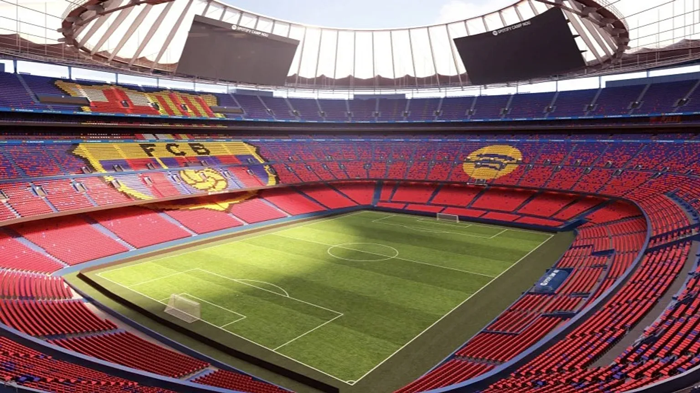

Locais turísticos

Principais Pontos Turísticos
- Sagrada Família (Barcelona) — A famosa basílica de Gaudí.
- Parque Güell (Barcelona) — Outro marco de Gaudí.
- Camp Nou — O famoso estádio do Barcelona.
- Alhambra e Generalife (Granada) — Palácio islâmico e jardins.
- Catedral de Sevilha e a Giralda — Campanário icônico.
- Real Alcázar de Sevilha — Palácio real muito antigo.
- Plaza de España (Sevilha) — Praça com azulejos lindos.